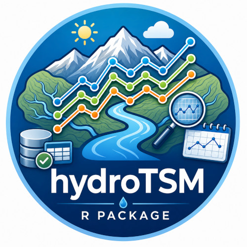

Description
hydroTSM is an R package designed to support the practical workflow of hydrologists and environmental scientists who routinely work with time series data. It provides a comprehensive and coherent set of tools for the management, quality control, analysis, interpolation, and visualization of hydrological and environmental time series, with particular emphasis on tasks commonly encountered in hydrological modelling and water resources assessment.
hydroTSM prioritises reliability, transparency, and functional breadth, reflecting the operational realities of applied hydrology, where reproducible data handling and robust diagnostics are often more critical than marginal computational gains. Its functions are built to integrate naturally into analytical pipelines, facilitating consistent preprocessing and exploration of observational datasets prior to modelling or decision-making.
Developed with the daily needs of practitioners in mind, hydroTSM has been widely used in research, teaching, and professional applications. It is especially suitable for users who require dependable, well-documented tools to support routine hydrological analysis while maintaining full control over data processing steps within the R environment.

Installation
Installing the latest stable version from CRAN:
install.packages("hydroTSM")Alternatively, you can also try the under-development version from Github:
if (!require(devtools)) install.packages("devtools")
library(devtools)
install_github("hzambran/hydroTSM")Reporting bugs, requesting new features
If you find an error in some function, or want to report a typo in the documentation, or to request a new feature (and wish it be implemented :) you can do it here
Citation
citation("hydroTSM")To cite hydroTSM in publications use:
Zambrano-Bigiarini, Mauricio (2025). hydroTSM: Time Series Management and Analysis for Hydrological Modelling. R package version 0.7-0. URL:https://CRAN.R-project.org/package=hydroTSM. doi:10.32614/CRAN.package.hydroTSM.
A BibTeX entry for LaTeX users is
@Manual{hydroTSM,
title = {hydroTSM: Time Series Management, Analysis and Interpolation for Hydrological Modelling},
author = {Zambrano-Bigiarini, Mauricio},
note = {R package version 0.7-0},
year = {2025}, url = {https://CRAN.R-project.org/package=hydroTSM},
doi = {doi:10.32614/CRAN.package.hydroTSM},
}
Vignettes
Daily precipitation. Here you can find an introductory vignette showing the use of several hydroTSM functions for analysing daily precipitation data.
Daily streamflows. Here you can find an introductory vignette showing the use of several hydroTSM functions for analysing daily streamflow data.